Antes de empezar con el artículo, quiero mencionar unas pautas generales para tener en cuenta al momento de analizar la información. , debemos aceptar que existen diferentes formas de realizar los pasos del artículo, en dichos casos, es necesario reconocer las posibles variables y compartirlas por medio de mensajes a nuestro correo electrónico. , la información compartida está sujeta a cambios, que en mayor o menor medida pueden afectar a nuestro artículo, le agradeceremos encarecidamente que nos ayuden a mantenerla actualizada. , no pretendemos realizar una guía extensa de Awesome, pero creemos que es muy importante conocer sus componentes y saber utilizarlos a nuestro favor. Es muy importante mencionar la necesidad tener ciertos conceptos previos para poder realizar adecuadamente cada uno de los pasos explicados en este artículo. Sin nada más que decir, empezamos con la guía.
Awesome es un gestor de ventanas, minimalista, dinámico y altamente personalizable. Debemos aclarar que no es un entorno de escritorio, ya que no posee las características del mismo. Originalmente está desarrollado en C y Lua (aunque se utiliza para ampliar y ajustar las funcionalidades). Está licenciado bajo la GNU GPLv2. No se dejen engañar, aunque no posea muchas herramientas, es necesario tener ciertos conocimientos a la hora de configurar a nuestro gusto. Principalmente, está diseñado para usuarios avanzados, desarrolladores y cualquiera que se encargue de tareas informáticas que requieran un control específico de su entorno gráfico. Si quieres saber más sobre Awesome, puedes visitar los siguientes enlaces que te dejo a continuación.
Antes de comenzar con la instalación y configuración preliminar, quiero mostrarles un panorama general de las diferentes cosas que podemos hacer con AwesomeWM. Existen varias formas de personalizar el escritorio a nuestro gusto, si eres un usuario que está comenzado, te recomiendo que descargues un tema y luego lo configures. En caso de tener experiencia y los conocimientos necesarios para realizarlo por ti mismo, bienvenido seas (comparte los resultados con los demás). AwesomeWM por sí solo no tiene la capacidad de, por ejemplo: modificar el volumen del sistema, alterar los valores de brillo, etc. Es decir, sólo funciona como un gestor de ventanas, las demás funcionalidades se agregan manualmente (se integra con otras aplicaciones). Por lo tanto, es necesario conocer un poco el lenguaje de programación Lua, pero tranquilo, a grandes rasgos puedes interpretar las líneas de código.
Originalmente así es , sin configuraciones previas. Como podemos apreciar, existen varias secciones que denotan una falta de estilo ,así que vamos a comparar el original con otro escritorio personalizado. A continuación, mostraremos una lista de temas para AwesomeWM.
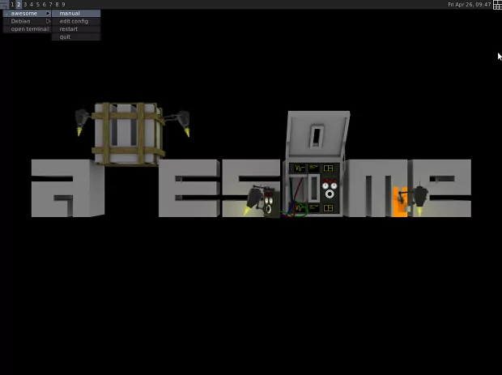
Existen una gran cantidad de temas, pero es mejor analizar por cuenta propia las opciones que tenemos. Generalmente podemos encontrar temas a través de la página oficial de AwesomeWM, o podemos navegar por GitHub, foros y blogs, para descargar más temas que se adapten a nuestras necesidades.
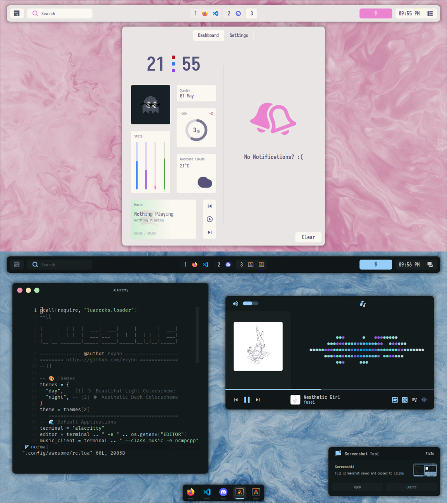
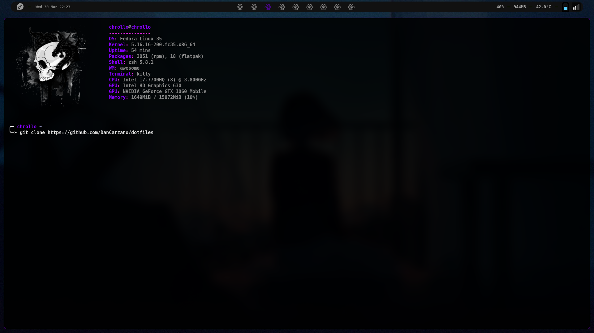
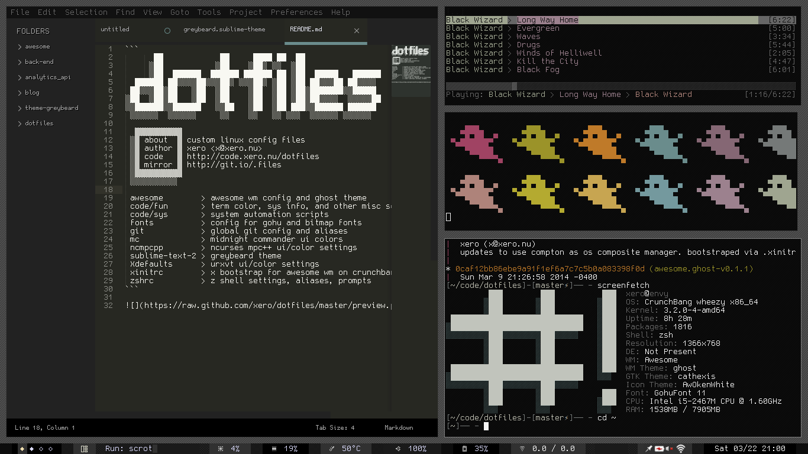
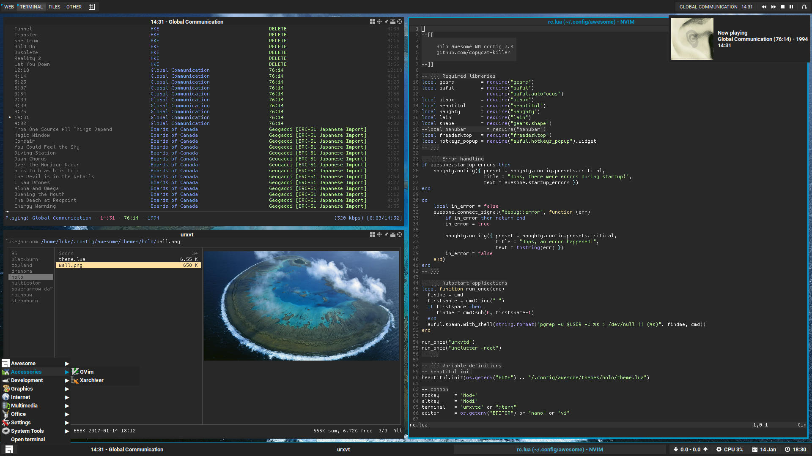
Existe una gran cantidad de temas, pero es mejor analizar por cuenta propia las opciones que tenemos. No es necesario crear una lista extensa.
AwesomeWM está disponible en la gran mayoría de distribuciones basadas en GNU/Linux. En este caso lo instalaremos desde el gestor de paquetes APT (Debian Bullseye). Si tienes otra distribución, debes verificar la existencia de awesome en tu gestor de paquetes. .Aclaro que necesito realizar un pequeño tutorial en la instalación para Debian, ya que tenemos 2 formas de instalarlo
Primero ingresamos a nuestra terminal preferida. Yo utilizo xfce4-terminal.
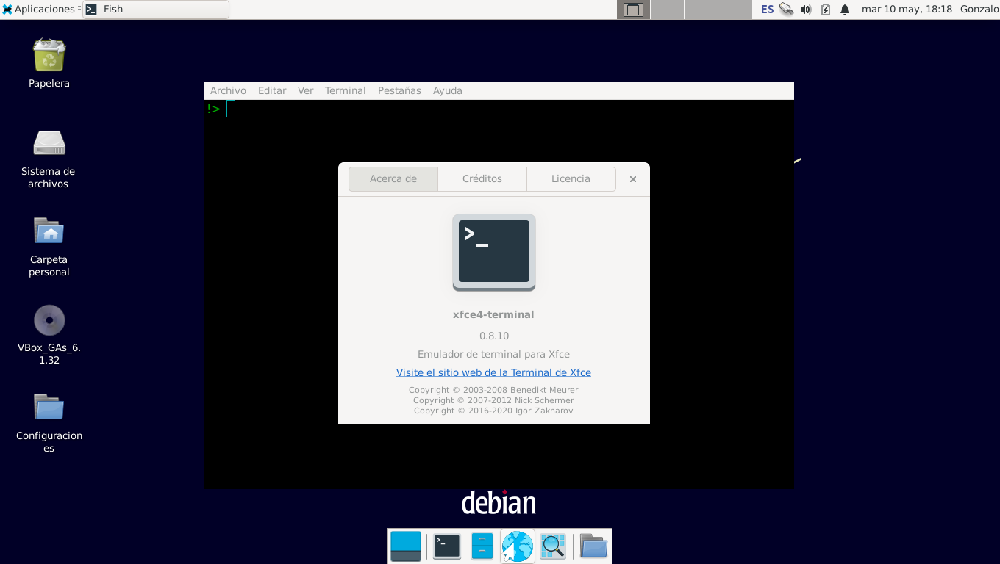
Introducimos los siguientes comandos por consola. Las líneas que empiezan con # son comentarios.
$sudo apt install awesome
#Verificamos que todo esté instalado correctamente.
$apt show awesome
#En todo caso, simplemente vemos la versión de AwesomeWM que tenemos instalada.
$awesome --version
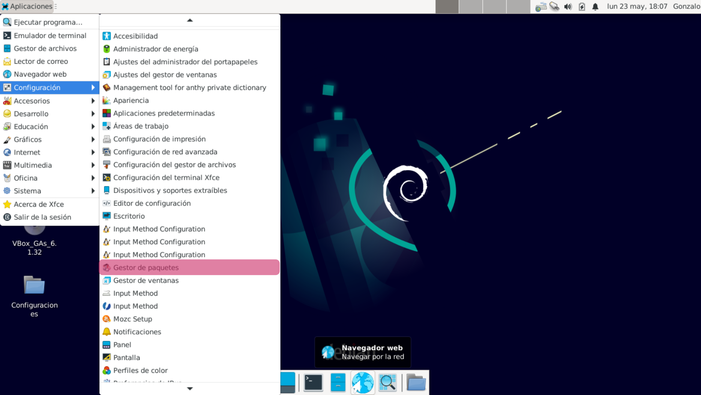
Para empezar, primero hacemos clic en la sección de rojo llamada "Gestor de paquetes" . Donde se iniciará el paquete llamado "Synaptic". Luego abrimos la sección de búsqueda para ingresar "awesome". Es lo que está marcado con un cuadro de color rosado/rojo.
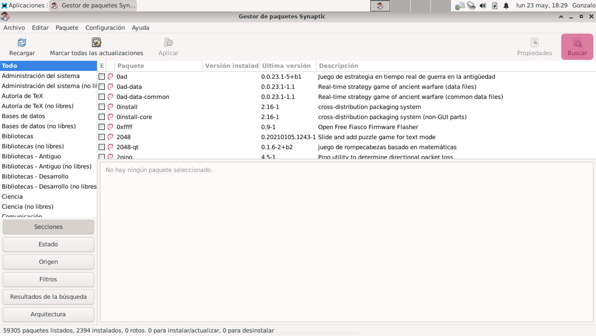
Luego de abrir la sección de búsqueda, ingresamos "awesome" en el recuadro marcado. Filtramos los resultados.
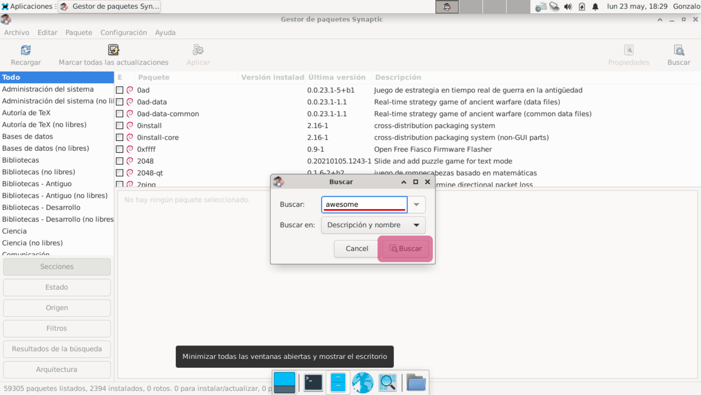
Instalamos los paquetes marcados con rojo/rosa. Seleccionamos el paquete y le damos clic derecho -> y luego seleccionamos el que corresponda con el botón . Repetimos lo mismo con los demás y luego hacemos clic en el botón superior que se titula . Mostrará una lista de cambios a ejecutarse. Aceptamos los paquetes.
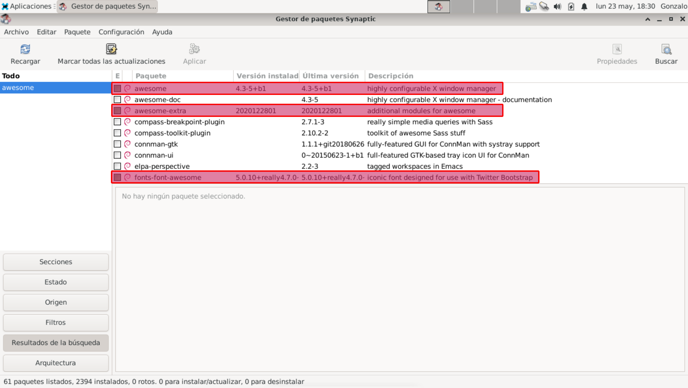
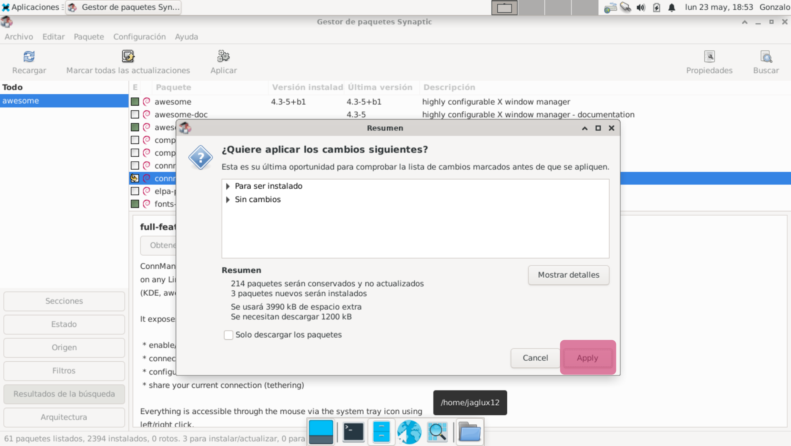
Aunque parezca algo obvio para muchas personas, debo mecionar que AwesomeWM generalmente lo podemos iniciar desde la pantalla de inicio de sesión. Donde ingresamos nuestro usuario y contraseña. En caso de que ya estés dentro de una cuenta, simplemente cerramos la sesión y luego marcamos con qué gestor queremos iniciar.
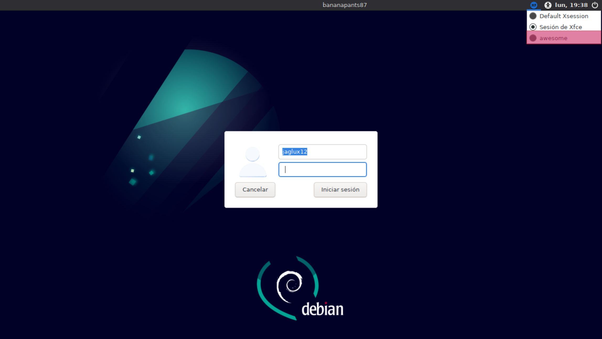
A primera vista podemos apreciar nuestro escritorio, reducido y simple en gran parte por donde lo mires.
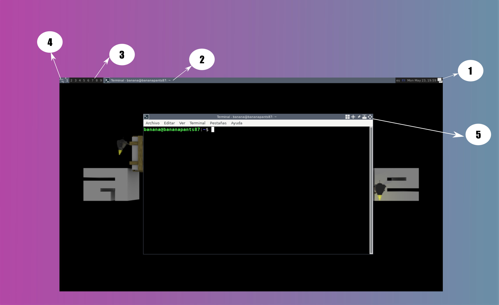